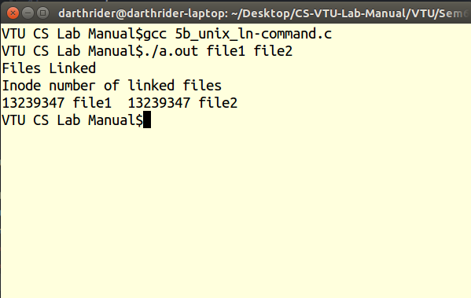

Links are created by giving alternate names to the original file. The use of links allows a large file, such as a database or mailing list, to be shared by several users without making copies of that file. Not only do links save disk space, but changes made to one file are automatically reflected in all the linked files. The ln command links the file designated in the SourceFile parameter to the file designated by the TargetFile parameter or to the same file name in another directory specified by the TargetDirectory parameter. By default, the ln command creates hard links.
To create a link to a file named chap1, type the following:
ln -f chap1 introThis links chap1 to the new name, intro. When the -f flag is used, the file name intro is created if it does not already exist. If intro does exist, the file is replaced by a link to chap1. Both the chap1 and intro file names refer to the same file.
To link a file named index to the same name in another directory named manual, type the following:
ln index manualThis links index to the new name, manual/index. To link several files to names in another directory, type the following:
ln chap2 jim/chap3 /home/manualThis links chap2 to the new name /home/manual/chap2 and jim/chap3 to /home/manual/chap3.
#include<stdio.h>
#include<unistd.h>
int main(int argc, char *argv[])
{
if(argc!=3)
{
printf("Usage: %s <src_file><dest_file>\n",argv[0]);
return 0;
}
if(link(argv[1],argv[2])==-1)
{
printf("Link Error\n");
return 1;
}
printf("Files Linked\n");
printf("Inode number of linked files\n");
//display the inode linked files
char str[100];
sprintf(str,"ls -i %s %s\n",argv[1],argv[2]);
system(str);
return 0;
}
vi 5b_unix_ln-command.cand then enter the source code and save it.
g++ 5b_unix_ln-command.c
./a.out abc.c out.cwhere abc.c is the source file and out.c is the new destination file to be given.
ls -lby checking the inode number of both the input files.
